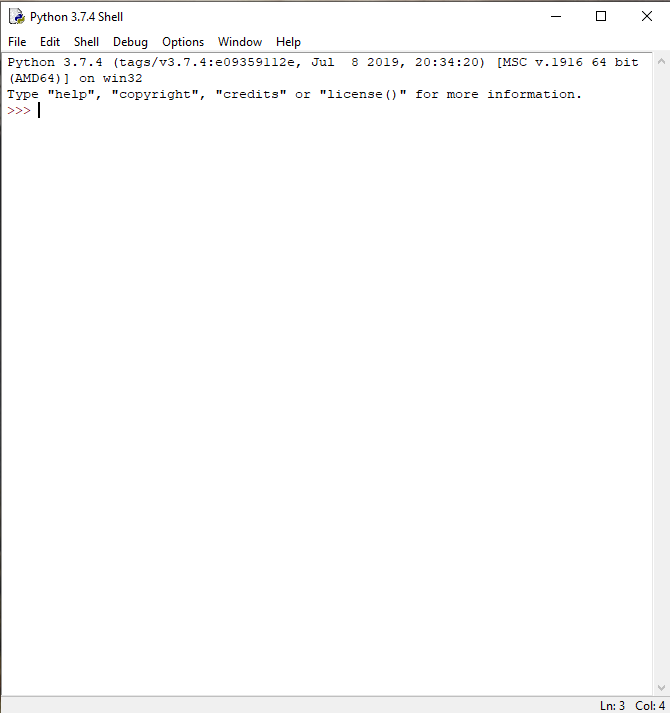

Úvod do Pythonu
Python je jeden z mnohých programovacích jazykov. Tak ako ľudia medzi sebou sa rozprávame spoločným jazykom, potrebujeme sa naučiť nový jazyk, ktorému rozumie počítač či robot. Tak mu budeme vedieť povedať, kedy sa pohnúť, ako rýchlo, čo zobraziť na displeji, a podobne.
Poďme na to!
Python ako kalkulačka
Spustíme program IDLE. Otvorí sa okno podobné tomu na obrázku nižšie.

Tento program nám bude slúžiť na písanie zdrojového kódu a jeho spustenie.
Zdrojový kód -- to sú príkazy, ktoré napíšeme počítaču. On si potom tento kód
prečíta riadok za riadkom a vykoná ich. Hovoríme tiež, že ich interpretuje. V
okne, ktoré sa nám otvorilo, môžeme zadávať jednotlivé príkazy. Na poslednom
riadku vidíme tzv. prompt: >>>. Označuje, že program je pripravený počúvať
na naše príkazy. Dokáže napr. fungovať ako kalkulačka, stačí hneď za prompt
napísať jednoduchý príklad a stlačiť Enter.
Znak * znamená násobenie. Vidíme, že Python pozná základné matematické
pravidlá, najprv vypočítal násobenie, až potom odčítanie. Ak by sme ho predsa
len chceli presvedčiť, aby najprv odčítal, použijeme zátvorky. Rovnako ako v
matematike. S tým rozdielom, že musíme použiť okrúhle zátvorky (), tie
ostatné ([]{}) majú pre Python iný význam a len by sme ho poplietli.
Pozrime sa na delenie:
V Pythone sa rozlišujú dva typy delenia:
/je klasické delenie ako ho poznáme,//je celočíselné delenie. To znamená, že výsledkom je číslo, koľkokrát najviac sa zmestí deliteľ do delenca celý.7 * 5 = 35, všetko je ešte v poriadku, ale7 * 6 = 42, a to je už viac než 40, preto40 // 7 = 5.
Poznámka
Presnejšie, // je delenie / nasledované zaokrúhlením nadol.
Ukážeme si ešte dve matematické špeciality.
Modulo
Alebo inak: zvyšok po celočíselnom delení. Je to tá časť, ktorá nám ešte chýba,
keď použijeme celočíselné delenie // namiesto /. Pre túto operáciu sa používa znak
%.
Úloha
Prečo posledný príklad vyšiel práve 40? Fungovalo by to aj s inými číslami? Napr. s trojkou:
Bude výsledok 3? Platí to pre všetky čísla?
Na poslednom príklade sa vám možno nepozdáva, že sme nepoužli žiadne zátvorky. Nemuseli sme, lebo násobenie, delenie aj modulo majú rovnakú prioritu. Sčítanie a odčítanie majú od nich menšiu prioritu, takže sa vyhodnotia neskôr. To už vieme, keď sme toto správanie zmenili použitím zátvoriek. No a pri viacerých operáciach rovnakej priority za sebou, Python ich vyhodnocuje zľava doprava. Znovu ako v matematike.
Takže tento príklad sa interpretuje akoby bol uzátvorkovaný takto:
Mocnina
Pripomeňme si, že mocnina je opakované násobenie.
23 = 2 * 2 * 2 = 8
V Pythone používame na umocňovanie operátor **:
Umocňovanie má ešte väčšiu prioritu než násobenie.
Úloha
Aký je výsledok nasledujúcich matematických výrazov? Overte si správnu odpoveď využitím Python IDLE.
- 5 + 8- (5 + 8)2 % 4 - 110 // 3 ** 25 / -35 // -3 * 3 + 5 % -3
Premenné
Pri zložitejších výpočtoch si často chceme uložiť medzivýsledok. Moderné kalkulačky to zvládnu a Python IDLE tiež!
Príkaz x = 4 + 8 znamená priradenie hodnoty na pravej strane (4 + 8) do
premennej na ľavej strane (x). Najprv Python vypočíta 4 + 8. Potom si na
miesto v pamäti, kde má uložený výsledok, nalepí poznámku "x". Je to názov
novej premennej, aby si pamätal kam sa má pozrieť, keď ju uvidí v našich
príkazoch nabudúce. Napr. 2 * x -> 2 * 12 -> 24.
Názvy môžu byť aj viacpísmenkové, môžu obsahovať veľké aj malé znaky, tiež cifry (ale cifra nemôže stáť na začiatku mena) a podtržítko ("_").
Čo sa stane ak budeme chcieť ukázať hodnotu premennej, ktorú Python ešte nepozná?
>>> y
Traceback (most recent call last):
File "<stdin>", line 1, in <module>
NameError: name 'y' is not defined
Všimnime si posledný riadok. Hovorí nám, že názov "y" nie je definovaný, inými slovami, nepozná ho, nevie kam sa pozrieť.
Úloha
Čo je výsledkom nasledujúcej postupnosti príkazov?
Aby sme si skratili zápis, namiesto
môžme používať
Význam je ten istý. Rovnako existuje -=, *=, /=, //=, %=, **=.
Vyskúšajte si použiť niektoré z nich.
Tlačiť!
V tejto časti si ukážeme nový príkaz. Volá sa "print". Z angličtiny vieme odhadnúť, na čo bude slúžiť. Vypíše text na obrazovku. Zatiaľ sme pracovali len s číslami, ešte nie z textom. V Pythone sa text píše medzi úvodzovky (").
Pozor!
Ak napíšeme text bez úvodzoviek, interpretuje sa to ako názov, ktorý bude Python hľadať a pravdepodobne dostaneme podobnú sťažnosť ako naposledy (hovorí sa im chybové hlášky).
Namiesto dvojitých úvodzoviek sa dajú použiť aj jednoduché (').
Text síce nie je číslo, ale v Pythone dokážeme text sčítavať a dokonca aj násobiť!
>>> print( 'Ahoj ' + 'Robo' + 'Lab' )
Ahoj RoboLab
>>> print( 'tra' + 'la' * 3 )
tralalala
>>> print( 3 + ' jablka' )
Traceback (most recent call last):
File "<stdin>", line 1, in <module>
TypeError: unsupported operand type(s) for +: 'int' and 'str'
Sčítať text a číslo sa už nedá. To presne nám povie chybová hláška na poslednom
riadku: operátor + nefunguje s číslom (ang. integer) a textom (ang.
character string). Ak potrebujeme vypísať v jednom príkaze text a zároveň
aj číslo, môžme ich oddeliť čiarkou. Python medzi ne automaticky vloží medzeru.
Takže print funguje aj s číslami, nielen textom! Pozor, môže sa zdať, že
nasledujúce riadky spravia to isté, ale nie je to celkom tak. Za chvíľu si o
tom povieme viac.
Náš prvý program
Python IDLE obsahuje dve časti. Jednu z nich, príkazový riadok (tiež shell), sme používali doteraz. Slúži na vykonávanie jednotlivých príkazov, ale naše programy v budúcnosti budú omnoho dlhšie, pozostávajúc z niekoľko desiatok, aj stoviek riadkov. Tu nám pomôže druhá časť: editor. Otvoríme ho cez "File" -> "New". Napíšme doň náš prvý program:
Používame to, čo sme sa už naučili, ale tentokrát nepíšeme naše príkazy do príkazového riadku a nevykonajú sa hneď. Keď chceme spustiť program, stlačíme kláves F5. IDLE nás vyzve aby sme si program uložili a potom ho spustí v okne príkazového riadku. Mali by sme zbadať vypísané:
Vráťme sa teraz k problému vypisovania čísel. Keď spustíme jednoduchý program,
na výstupe sa nám zobrazí 15. Skúste si to! Správne, Python najprv vypočíta
"3 * 5 = 15" a následne výsledok príkazom print vypíše na obrazovku. Skúsme
teraz spustiť program bez príkazu print.
Na výstupe sa nám nič nezobrazí! Prečo? Python znovu vyhodnotí "3 * 5 = 15", ale tento výsledok sa stratí, nemá žiadny príkaz, aby ho vypísal. Príkazový riadok nám vždy aj ukáže výsledok toho, čo mu zadáme.
Ale ak chceme niečo vypísať z programu, vždy musíme použiť príkaz print!
Tip
V ukážkach na týchto stránkach odlíšime príkazový riadok jednoducho:
začína tromi väčšítkami >>>. Ak tam nie sú, znamená to, že daná ukážka je
program, a teda ho treba napísať do editoru.
Prečo si to nezopakovať?
Doteraz bol Python celkom nudný. Keď sme chceli, aby nám niečo napísal, museli sme mu to sami napísať a ešte k tomu naviac dopísať "print". Na čo nám je taký Python? Ukážme si teda, že je silnejší, než sa zdá. Spustite si tento program. Predposledné dva riadky začínajú štyrmi medzerami a namiesto štyroch stlačení medzerníka môžeme použiť kláves Tab.
Zdá sa, že sme použili nový príkaz: while. Aby sme mu porozumeli, musíme si
najprv povedať niečo o ne/pravdách v Pythone.
Logické áno a nie
Presuňme sa nachvíľu znovu do príkazového riadku. Pracovali sme už s textovými
a číselnými hodnotami, teraz si ukážeme logické hodnoty (ang. boolean podľa
matematika Georgea Boolea).
Existujú len dve: True (pravda) a False (nepravda). V počítačoch je všetko
jasné, buď to je jednoducho pravdivé alebo nie je.
Máme celkovo 6 porovnávacích operátorov:
| Operátor | Význam |
|---|---|
== |
rovná sa |
!= |
nerovná sa |
< |
menšie než |
<= |
menšie, nanajvýš rovné |
> |
väčšie než |
>= |
väčšie, nanajvýš rovné |
Pozor!
Ak chceme porovnávať, používame == (dva znaky "="), ale ak
priraďujeme hodnotu do premennej, používame len = (jeden znak "=").
Porovnávať nemusíme len čísla:
>>> 'text' != 'text'
False
>>> 2 == 'text'
False
>>> 2 == '2'
False
>>> 2 < 'text'
Traceback (most recent call last):
File "<stdin>", line 1, in <module>
TypeError: '<' not supported between instances of 'int' and 'str'
>>> 'text' < 'text'
False
>>> 'a' < 'b'
True
>>> 'a' < 'aa'
True
>>> 'ab' <= 'aa'
False
Textové reťazce sa porovnávajú lexikograficky. To znamená, ak nejaké slovo nájdeme v abecednom zozname skôr než nejaké druhé slovo, tak to prvé bude menšie. Číslo sa nikdy nebude rovnať žiadnemu textu a dokonca na menšie/vačšie sa ani nemôžeme spýtať.
Logické hodnoty sa správajú ako čísla, pričom False je nula a True
jednotka.
V Pythone má každá premenná (a každá hodnota) nejaký typ (dátový typ).
Dokážeme ho zistiť pomocou príkazu type:
>>> type( 3 )
<class 'int'>
>>> type( 'text' )
<class 'str'>
>>> type( True )
<class 'bool'>
>>> a = False
>>> type( a )
<class 'bool'>
S presným významom slovíčka class si zatiaľ nebudeme lámať hlavu, stačí si
zapamätať, že každá hodnota má nejaký jednoznačný typ.
Príkaz while
Teraz už budeme vedieť použiť príkaz while (nazýva sa tiež cyklus):
"while" znamená po anglicky "pokým". A tak mu Python aj rozumie. Pokým je
"podmienka" pravdivá, teda True, tak bude postupne vykonávať "príkaz 1",
"príkaz 2", ..., všetko, čo je odsadené o štyri medzery vpravo (týmto príkazom
hovoríme telo cyklu). Keď príde na koniec, znovu sa spýta, či je "podmienka"
pravdivá, ak áno, vykoná znovu telo cyklu. A tak stále dokola. Keď už
"podmienka" pravdivá nebude, Python skočí na "príkaz 3" a pokračuje ďalej.
Vyskúšajme si spraviť nekonečný cyklus. Napíšeme takýto jednoduchý program:
Spustíme, a keďže 1 == 1 sa vždy vyhodnotí na True, tak máme celú obrazovku
"ahoj"ov. Program môžme zastaviť klávesovou kombináciou Ctrl+C. Rovnako by sme
mohli napísať:
Úloha
Čo vypíše nasledujúci program?
Najprv skúste na to prísť sami, odpoveď si potom overte spustením.
Vieme už dosť na to, aby sme si napísali trochu zaujímavejší program. Budeme
"kresliť" trojuholníky z hviezdičiek (*). Od teraz budeme písať zdrojový kód
po anglicky. Nebudú sa nám miešať slovenské a anglické slová (napr.
print( 'jablko' )), a keď vytvoríme nejaký úžasný program, budeme sa môcť oň
podeliť s celým svetom!
Ako chceme aby vyzerali trojuholníky z hviezdičiek? Najmenší trojuholník veľkosti 1 je jednoduchý:
Veľkosť dva:
Veľkosť 4:
Už máme predstavu, čo chceme naprogramovať, takže pustime sa do toho. Potrebujeme vedieť, aký veľký trojuholník chceme.
Vidíme, že trojuholník je nakreslený na toľko isto riadkov aká je jeho veľkosť.
Na miesto # print one row napíšeme kód, ktorý to vykoná, zatiaľ sme si to len
poznačili. Takáto časť v zdrojovom kóde sa nazýva komentár. Začína sa znakom
"#" a pokračuje až do konca riadku. Komentáre Python ignoruje, sú to poznámky
nás, programátorov. Ak by sme úvodný "#" nepoužili, Python by sa snažil
interpretovať daný riadok ako príkaz a skončil by s chybovou hláškou.
Pozrime sa na to, ako sme použili premennú "size" v podmienke cyklu. Na
začiatku programu sa nastaví na hodnotu 3. Podmienka size > 0 sa vyhodnotí na
True a telo cyklu sa vykoná. V ňom máme príkaz size -= 1. Takže teraz už
platí "size = 2". Znovu príde na podmienku cyklu, "2 > 0", a teda telo cyklu sa
vykoná, "size" sa zníži o jedna, na hodnotu 1. Podmienka je znovu vyhodnotená
ako True, "size" sa zníži na hodnotu 0. Teraz už podmienka splnená nie je a
telo cyklu sa nezopakuje.
Celkovo sa teda cyklus zopakoval 3 krát. Presne to sme chceli! Zostáva nám v každom opakovaní vykresliť jeden riadok. Na prvom riadku chceme mať 3 hviezdičky. Na druhom 2 a na poslednom jednu.
Hurá a je to! Teraz stačí zmeniť v prvom riadku "size" na veľkosť akú chceme a Python nám vykreslí žiadaný trojuholník. Vyskúšajte si rôzne veľkosti.
Úloha 1
Napíšte program podobný tomu poslednému, ktorý bude kresliť štvorce.
Úloha 2
Napíšte program kresliaci trojuholníky, ale naopak ako doteraz. Teda, pre veľkosť 4 bude vyzerať:
Toto je už trochu ťažšia úloha, vyžaduje použiť až dve premenné. "size" sa tentokrát meniť nebude, ale druhá premenná bude mať postupne hodnoty od 1 až po "size", takže budete vedieť jednoducho vykresliť hviezdičky na každom riadku podľa nej. Premyslite si to dobre.
Úloha 3
Napíšte program, ktorý vykreslí obdĺžnik. Na začiatku budú teda dve premenné: jedna pre veľkosť každej strany.